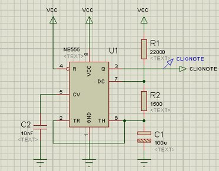
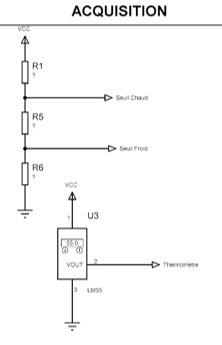
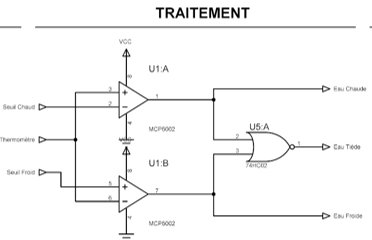
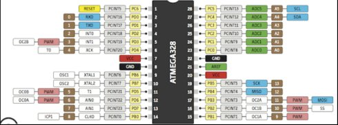
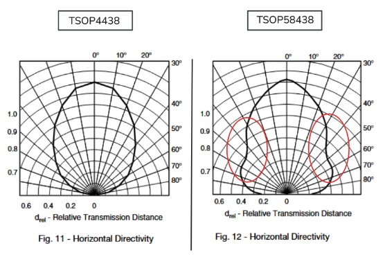

Je propose une solution technique
pour répondre à une fonction
Identifier les fonctions d'un système ne suffit pas : il faut choisir les composants qui les réalisent. Cette compétence consiste à sélectionner, parmi les solutions disponibles, le composant ou circuit le mieux adapté à une exigence donnée — en justifiant chaque choix par les caractéristiques du cahier des charges.
BUT 1 · SAÉ S1
SLR — Système Sonore et Lumineux Rafale
Pour le SLR, chaque exigence identifiée en phase de conception devait être traduite en un composant concret. Pour répondre à EXIG_CLIGNOTE (clignotement d'une LED jaune à période 1,9 s et temps d'allumage 0,1 s), j'ai retenu le NE555 en mode astable. En appliquant les formules issues de la datasheet, j'ai dimensionné les composants en partant de C = 100 µF pour rester dans des valeurs de résistances raisonnables. J'ai obtenu Ra = 22 kΩ et Rb = 1,5 kΩ après normalisation en série E6.
Pour valider ces valeurs avant fabrication, j'ai simulé le montage sous ISIS : la période mesurée était de 1,73 s (écart de −8,8 % par rapport à la cible) et le temps d'allumage de 0,103 s (+3,0 %), tous deux dans la tolérance de ±20 % autorisée par le cahier des charges. Ce premier dimensionnement m'a confronté à une démarche concrète de lecture de datasheet et d'utilisation de la simulation comme outil de validation avant de proposer une solution finale.

Figure 1 : NE555 astable simulé sous ISIS — Ra = 22 kΩ, Rb = 1,5 kΩ, C = 100 µF (§CDT_CLIGNOTE)
BUT 1 · SAÉ S1
TDB — Thermomètre De Bain
Le TDB m'a confronté à des choix de composants portant sur des grandeurs physiques mesurables. Pour EXIG_COMPARAISONS (seuils froid 36 °C / chaud 39 °C), j'ai co-rédigé avec Baptiste Masiero la justification du choix de l'amplificateur opérationnel MCP6002 en comparateur. Face au choix entre un comparateur dédié et un AOP, nous avons retenu le MCP6002 pour sa compatibilité alimentation simple 5 V et sa capacité à piloter directement les LED d'alerte, sans circuit de commande additionnel.
Cette chaîne de mesure s'appuie sur trois étages interdépendants : le capteur LM35 (10 mV/°C), le pont diviseur de tension qui génère les références à 360 mV (36 °C) et 390 mV (39 °C), et enfin les deux MCP6002 associés à une porte logique pour distinguer les zones froide, tiède et chaude. La cohérence entre ces trois étages — mêmes niveaux de tension, même référence d'alimentation — doit être garantie dès la sélection des composants.

Figure 2 : Acquisition — LM35 et pont diviseur seuils froid / chaud (§CPR_MESURE / §CPR_SEUILS)

Figure 3 : Traitement — MCP6002 comparateurs + porte 74HC02 détection zones (§CPR_COMPARAISONS)
BUT 1 · SAÉ S2
KAH — Kart à Hélice
Le KAH est le projet où j'ai proposé le plus de solutions techniques, en co-rédigeant avec Baptiste Masiero les paragraphes du sous-système récepteur. Pour EXIG_RCPT_TRAITEMENT, nous avons justifié le choix de l'ATmega328P face à l'ATSAMD21 : boîtier THD plus adapté à notre outillage de soudure, performances temporelles largement suffisantes pour décoder le protocole NEC à 38 kHz, et brochage couvrant l'ensemble des périphériques nécessaires. Le brochage complet du microcontrôleur nous a permis de vérifier que les 28 broches disponibles suffisaient pour connecter le récepteur IR, le moteur brushless, le servomoteur, le buzzer et les deux LED.
Pour EXIG_RCPT_CAPTEUR, le module TSOP4438 a été retenu pour deux avantages déterminants : sa lentille hémisphérique lui confère un champ de vision panoramique de ±45°, éliminant les angles morts critiques visibles sur le diagramme de directivité du TSOP58438 concurrent, et sa portée maximale de 45 m assure une large marge sur l'exigence de 10 m du cahier des charges.
J'ai également co-rédigé les paragraphes d'énergie récepteur (§CDT_RCPT_ENERGIE) et d'interrupteur (§CDT_RCPT_INTERRUPTEUR), en calculant le courant total consommé (2,673 A à mi-puissance), ce qui m'a conduit au choix de l'accumulateur LiPo 1000 mAh. J'ai enfin rédigé seul le schéma électrique détaillé du récepteur (§CDT_RCPT_SCHEMA). Le KAH m'a appris à proposer des solutions pour deux sous-systèmes distincts dont les choix devaient rester cohérents entre eux — mêmes niveaux logiques, même protocole IR, mêmes contraintes d'alimentation.

Figure 4 : Brochage ATmega328P — vérification des broches disponibles pour le récepteur KAH (§CPR_RCPT_TRAITEMENT)

Figure 5 : Directivité TSOP4438 vs TSOP58438 — angles morts (courbe rouge) éliminés sur le TSOP4438 (§CPR_RCPT_CAPTEUR)